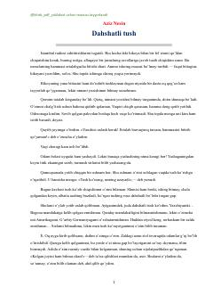

DTYozuvchining tushida o'z yurtini chet elliklar oldida maqtab, qaltis vaziyatga tushib qolgani haqidagi hikoya.
Mashhur yozuvchi Aziz Nesinning ushbu hikoyasida tunda yozuvchi ko'rgan g'aroyib va dahshatli tush voqealari haqida hikoya qilinadi. Bosh qahramon tushida chet elda o'z mamlakatini maqtab, vaziyatni ijobiy ko'rsatishga majbur bo'ladi. Asar hajviy ruhda yozilgan bo'lib, jamioatdagi ayrim illatlarni kulgi ostiga oladi.